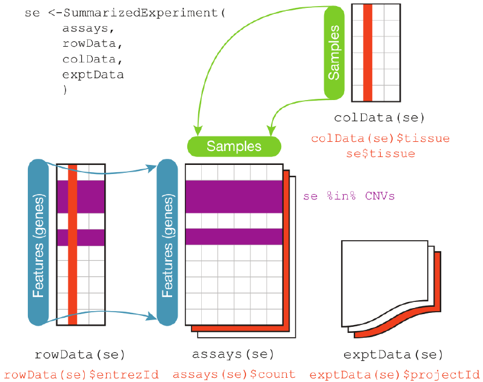

BiocManager::install('airway')
BiocManager::install('SummarizedExperiment')14 Introduction to SummarizedExperiment
The SummarizedExperiment class is used to store rectangular matrices of experimental results, which are commonly produced by sequencing and microarray experiments. Each object stores observations of one or more samples, along with additional meta-data describing both the observations (features) and samples (phenotypes).
A key aspect of the SummarizedExperiment class is the coordination of the meta-data and assays when subsetting. For example, if you want to exclude a given sample you can do for both the meta-data and assay in one operation, which ensures the meta-data and observed data will remain in sync. Improperly accounting for meta and observational data has resulted in a number of incorrect results and retractions so this is a very desirable property.
SummarizedExperiment is in many ways similar to the historical ExpressionSet, the main distinction being that SummarizedExperiment is more flexible in it’s row information, allowing both GRanges based as well as those described by arbitrary DataFrames. This makes it ideally suited to a variety of experiments, particularly sequencing based experiments such as RNA-Seq and ChIp-Seq.
14.1 Anatomy of a SummarizedExperiment
The SummarizedExperiment package contains two classes: SummarizedExperiment and RangedSummarizedExperiment.
SummarizedExperiment is a matrix-like container where rows represent features of interest (e.g. genes, transcripts, exons, etc.) and columns represent samples. The objects contain one or more assays, each represented by a matrix-like object of numeric or other mode. The rows of a SummarizedExperiment object represent features of interest. Information about these features is stored in a DataFrame object, accessible using the function rowData(). Each row of the DataFrame provides information on the feature in the corresponding row of the SummarizedExperiment object. Columns of the DataFrame represent different attributes of the features of interest, e.g., gene or transcript IDs, etc.
RangedSummarizedExperiment is the “child”” of the SummarizedExperiment class which means that all the methods on SummarizedExperiment also work on a RangedSummarizedExperiment.
The fundamental difference between the two classes is that the rows of a RangedSummarizedExperiment object represent genomic ranges of interest instead of a DataFrame of features. The RangedSummarizedExperiment ranges are described by a GRanges or a GRangesList object, accessible using the rowRanges() function.
Figure 14.1 displays the class geometry and highlights the vertical (column) and horizontal (row) relationships.

colData(), the rowData() and the assays(). The accessors for the various parts of a complete SummarizedExperiment object match the names.14.1.1 Assays
The airway package contains an example dataset from an RNA-Seq experiment of read counts per gene for airway smooth muscles. These data are stored in a RangedSummarizedExperiment object which contains 8 different experimental and assays 64,102 gene transcripts.
Loading required package: airwaylibrary(SummarizedExperiment)
data(airway, package="airway")
se <- airway
seclass: RangedSummarizedExperiment
dim: 63677 8
metadata(1): ''
assays(1): counts
rownames(63677): ENSG00000000003 ENSG00000000005 ... ENSG00000273492
ENSG00000273493
rowData names(10): gene_id gene_name ... seq_coord_system symbol
colnames(8): SRR1039508 SRR1039509 ... SRR1039520 SRR1039521
colData names(9): SampleName cell ... Sample BioSampleTo retrieve the experiment data from a SummarizedExperiment object one can use the assays() accessor. An object can have multiple assay datasets each of which can be accessed using the $ operator. The airway dataset contains only one assay (counts). Here each row represents a gene transcript and each column one of the samples.
assays(se)$counts| SRR1039508 | SRR1039509 | SRR1039512 | SRR1039513 | SRR1039516 | SRR1039517 | SRR1039520 | SRR1039521 | |
|---|---|---|---|---|---|---|---|---|
| ENSG00000000003 | 679 | 448 | 873 | 408 | 1138 | 1047 | 770 | 572 |
| ENSG00000000005 | 0 | 0 | 0 | 0 | 0 | 0 | 0 | 0 |
| ENSG00000000419 | 467 | 515 | 621 | 365 | 587 | 799 | 417 | 508 |
| ENSG00000000457 | 260 | 211 | 263 | 164 | 245 | 331 | 233 | 229 |
| ENSG00000000460 | 60 | 55 | 40 | 35 | 78 | 63 | 76 | 60 |
| ENSG00000000938 | 0 | 0 | 2 | 0 | 1 | 0 | 0 | 0 |
| ENSG00000000971 | 3251 | 3679 | 6177 | 4252 | 6721 | 11027 | 5176 | 7995 |
| ENSG00000001036 | 1433 | 1062 | 1733 | 881 | 1424 | 1439 | 1359 | 1109 |
| ENSG00000001084 | 519 | 380 | 595 | 493 | 820 | 714 | 696 | 704 |
| ENSG00000001167 | 394 | 236 | 464 | 175 | 658 | 584 | 360 | 269 |
14.1.2 ‘Row’ (regions-of-interest) data
The rowRanges() accessor is used to view the range information for a RangedSummarizedExperiment. (Note if this were the parent SummarizedExperiment class we’d use rowData()). The data are stored in a GRangesList object, where each list element corresponds to one gene transcript and the ranges in each GRanges correspond to the exons in the transcript.
rowRanges(se)GRangesList object of length 63677:
$ENSG00000000003
GRanges object with 17 ranges and 2 metadata columns:
seqnames ranges strand | exon_id exon_name
<Rle> <IRanges> <Rle> | <integer> <character>
[1] X 99883667-99884983 - | 667145 ENSE00001459322
[2] X 99885756-99885863 - | 667146 ENSE00000868868
[3] X 99887482-99887565 - | 667147 ENSE00000401072
[4] X 99887538-99887565 - | 667148 ENSE00001849132
[5] X 99888402-99888536 - | 667149 ENSE00003554016
... ... ... ... . ... ...
[13] X 99890555-99890743 - | 667156 ENSE00003512331
[14] X 99891188-99891686 - | 667158 ENSE00001886883
[15] X 99891605-99891803 - | 667159 ENSE00001855382
[16] X 99891790-99892101 - | 667160 ENSE00001863395
[17] X 99894942-99894988 - | 667161 ENSE00001828996
-------
seqinfo: 722 sequences (1 circular) from an unspecified genome
...
<63676 more elements>14.1.3 ‘Column’ (sample) data
Sample meta-data describing the samples can be accessed using colData(), and is a DataFrame that can store any number of descriptive columns for each sample row.
colData(se)DataFrame with 8 rows and 9 columns
SampleName cell dex albut Run avgLength
<factor> <factor> <factor> <factor> <factor> <integer>
SRR1039508 GSM1275862 N61311 untrt untrt SRR1039508 126
SRR1039509 GSM1275863 N61311 trt untrt SRR1039509 126
SRR1039512 GSM1275866 N052611 untrt untrt SRR1039512 126
SRR1039513 GSM1275867 N052611 trt untrt SRR1039513 87
SRR1039516 GSM1275870 N080611 untrt untrt SRR1039516 120
SRR1039517 GSM1275871 N080611 trt untrt SRR1039517 126
SRR1039520 GSM1275874 N061011 untrt untrt SRR1039520 101
SRR1039521 GSM1275875 N061011 trt untrt SRR1039521 98
Experiment Sample BioSample
<factor> <factor> <factor>
SRR1039508 SRX384345 SRS508568 SAMN02422669
SRR1039509 SRX384346 SRS508567 SAMN02422675
SRR1039512 SRX384349 SRS508571 SAMN02422678
SRR1039513 SRX384350 SRS508572 SAMN02422670
SRR1039516 SRX384353 SRS508575 SAMN02422682
SRR1039517 SRX384354 SRS508576 SAMN02422673
SRR1039520 SRX384357 SRS508579 SAMN02422683
SRR1039521 SRX384358 SRS508580 SAMN02422677This sample metadata can be accessed using the $ accessor which makes it easy to subset the entire object by a given phenotype.
# subset for only those samples treated with dexamethasone
se[, se$dex == "trt"]class: RangedSummarizedExperiment
dim: 63677 4
metadata(1): ''
assays(1): counts
rownames(63677): ENSG00000000003 ENSG00000000005 ... ENSG00000273492
ENSG00000273493
rowData names(10): gene_id gene_name ... seq_coord_system symbol
colnames(4): SRR1039509 SRR1039513 SRR1039517 SRR1039521
colData names(9): SampleName cell ... Sample BioSample14.1.4 Experiment-wide metadata
Meta-data describing the experimental methods and publication references can be accessed using metadata().
metadata(se)[[1]]
Experiment data
Experimenter name: Himes BE
Laboratory: NA
Contact information:
Title: RNA-Seq transcriptome profiling identifies CRISPLD2 as a glucocorticoid responsive gene that modulates cytokine function in airway smooth muscle cells.
URL: http://www.ncbi.nlm.nih.gov/pubmed/24926665
PMIDs: 24926665
Abstract: A 226 word abstract is available. Use 'abstract' method.Note that metadata() is just a simple list, so it is appropriate for any experiment wide metadata the user wishes to save, such as storing model formulas.
metadata(se)$formula <- counts ~ dex + albut
metadata(se)[[1]]
Experiment data
Experimenter name: Himes BE
Laboratory: NA
Contact information:
Title: RNA-Seq transcriptome profiling identifies CRISPLD2 as a glucocorticoid responsive gene that modulates cytokine function in airway smooth muscle cells.
URL: http://www.ncbi.nlm.nih.gov/pubmed/24926665
PMIDs: 24926665
Abstract: A 226 word abstract is available. Use 'abstract' method.
$formula
counts ~ dex + albut14.2 Common operations on SummarizedExperiment
14.2.1 Subsetting
[Performs two dimensional subsetting, just like subsetting a matrix or data frame.
# subset the first five transcripts and first three samples
se[1:5, 1:3]class: RangedSummarizedExperiment
dim: 5 3
metadata(2): '' formula
assays(1): counts
rownames(5): ENSG00000000003 ENSG00000000005 ENSG00000000419
ENSG00000000457 ENSG00000000460
rowData names(10): gene_id gene_name ... seq_coord_system symbol
colnames(3): SRR1039508 SRR1039509 SRR1039512
colData names(9): SampleName cell ... Sample BioSample$operates oncolData()columns, for easy sample extraction.
se[, se$cell == "N61311"]class: RangedSummarizedExperiment
dim: 63677 2
metadata(2): '' formula
assays(1): counts
rownames(63677): ENSG00000000003 ENSG00000000005 ... ENSG00000273492
ENSG00000273493
rowData names(10): gene_id gene_name ... seq_coord_system symbol
colnames(2): SRR1039508 SRR1039509
colData names(9): SampleName cell ... Sample BioSample14.2.2 Getters and setters
rowRanges()/ (rowData()),colData(),metadata()
counts <- matrix(1:15, 5, 3, dimnames=list(LETTERS[1:5], LETTERS[1:3]))
dates <- SummarizedExperiment(assays=list(counts=counts),
rowData=DataFrame(month=month.name[1:5], day=1:5))
# Subset all January assays
dates[rowData(dates)$month == "January", ]class: SummarizedExperiment
dim: 1 3
metadata(0):
assays(1): counts
rownames(1): A
rowData names(2): month day
colnames(3): A B C
colData names(0):assay()versusassays()There are two accessor functions for extracting the assay data from aSummarizedExperimentobject.assays()operates on the entire list of assay data as a whole, whileassay()operates on only one assay at a time.assay(x, i)is simply a convenience function which is equivalent toassays(x)[[i]].
assays(se)List of length 1
names(1): countsassays(se)[[1]][1:5, 1:5] SRR1039508 SRR1039509 SRR1039512 SRR1039513 SRR1039516
ENSG00000000003 679 448 873 408 1138
ENSG00000000005 0 0 0 0 0
ENSG00000000419 467 515 621 365 587
ENSG00000000457 260 211 263 164 245
ENSG00000000460 60 55 40 35 78# assay defaults to the first assay if no i is given
assay(se)[1:5, 1:5] SRR1039508 SRR1039509 SRR1039512 SRR1039513 SRR1039516
ENSG00000000003 679 448 873 408 1138
ENSG00000000005 0 0 0 0 0
ENSG00000000419 467 515 621 365 587
ENSG00000000457 260 211 263 164 245
ENSG00000000460 60 55 40 35 78assay(se, 1)[1:5, 1:5] SRR1039508 SRR1039509 SRR1039512 SRR1039513 SRR1039516
ENSG00000000003 679 448 873 408 1138
ENSG00000000005 0 0 0 0 0
ENSG00000000419 467 515 621 365 587
ENSG00000000457 260 211 263 164 245
ENSG00000000460 60 55 40 35 7814.2.3 Range-based operations
subsetByOverlaps()SummarizedExperimentobjects support all of thefindOverlaps()methods and associated functions. This includessubsetByOverlaps(), which makes it easy to subset aSummarizedExperimentobject by an interval.
In tne next code block, we define a region of interest (or many regions of interest) and then subset our SummarizedExperiment by overlaps with this region.
# Subset for only rows which are in the interval 100,000 to 110,000 of
# chromosome 1
roi <- GRanges(seqnames="1", ranges=100000:1100000)
sub_se = subsetByOverlaps(se, roi)
sub_seclass: RangedSummarizedExperiment
dim: 74 8
metadata(2): '' formula
assays(1): counts
rownames(74): ENSG00000131591 ENSG00000177757 ... ENSG00000272512
ENSG00000273443
rowData names(10): gene_id gene_name ... seq_coord_system symbol
colnames(8): SRR1039508 SRR1039509 ... SRR1039520 SRR1039521
colData names(9): SampleName cell ... Sample BioSampledim(sub_se)[1] 74 814.3 Constructing a SummarizedExperiment
Often, SummarizedExperiment or RangedSummarizedExperiment objects are returned by functions written by other packages. However it is possible to create them by hand with a call to the SummarizedExperiment() constructor. The code below is simply to illustrate the mechanics of creating an object from scratch. In practice, you will probably have the pieces of the object from other sources such as Excel files or csv files.
Constructing a RangedSummarizedExperiment with a GRanges as the rowRanges argument:
nrows <- 200
ncols <- 6
counts <- matrix(runif(nrows * ncols, 1, 1e4), nrows)
rowRanges <- GRanges(rep(c("chr1", "chr2"), c(50, 150)),
IRanges(floor(runif(200, 1e5, 1e6)), width=100),
strand=sample(c("+", "-"), 200, TRUE),
feature_id=sprintf("ID%03d", 1:200))
colData <- DataFrame(Treatment=rep(c("ChIP", "Input"), 3),
row.names=LETTERS[1:6])
SummarizedExperiment(assays=list(counts=counts),
rowRanges=rowRanges, colData=colData)class: RangedSummarizedExperiment
dim: 200 6
metadata(0):
assays(1): counts
rownames: NULL
rowData names(1): feature_id
colnames(6): A B ... E F
colData names(1): TreatmentA SummarizedExperiment can be constructed with or without supplying a DataFrame for the rowData argument:
SummarizedExperiment(assays=list(counts=counts), colData=colData)class: SummarizedExperiment
dim: 200 6
metadata(0):
assays(1): counts
rownames: NULL
rowData names(0):
colnames(6): A B ... E F
colData names(1): Treatment